199 — Transit Gateway, Virtual WAN y Network Connectivity Center
Parte: 16 — Redes cloud avanzadas, conectividad híbrida y edge
Nivel: avanzado · Horas estimadas: 4
Laboratorio: network · Estado: EXECUTABLE_CORE
🎯 Propósito
Sustituir la maraña de conexiones punto a punto por un concentrador de conectividad, y hacerlo sin convertirlo en un punto único ni en una autopista donde todo alcanza a todo. La clase explica por qué el emparejamiento directo deja de escalar, cómo se usan las tablas de rutas del concentrador para segmentar de verdad, qué cuesta cada salto en dinero y latencia, y cuándo un concentrador es la respuesta equivocada.
📚 Resultados de aprendizaje
Al finalizar podrás:
- Explicar por qué las conexiones punto a punto no escalan.
- Segmentar con tablas de rutas del concentrador en vez de con reglas.
- Calcular el coste de un concentrador en dinero y en latencia.
- Conectar varias regiones y varias nubes sin crear caminos indeseados.
- Decidir cuándo NO usar un concentrador.
🧩 Conceptos centrales
| Concepto | Comprensión verificable |
|---|---|
emparejamiento directo |
Conexión entre dos redes. Simple, barata y sin tránsito: no encadena. |
concentrador de conectividad |
Servicio central al que se conectan las redes y que encamina entre ellas. |
tabla de rutas del concentrador |
Conjunto de rutas asociado a un grupo de conexiones. Es el mecanismo de segmentación real. |
aislamiento por asociación |
Que una red solo vea las rutas de la tabla a la que está asociada. |
inspección centralizada |
Hacer pasar el tráfico entre segmentos por un cortafuegos común. |
coste por salto |
Lo que cobra el concentrador por conexión y por gigabyte procesado, que se paga en cada dirección. |
🧠 Modelo mental
La red cloud es un sistema distribuido de rutas, identidades y políticas; cada salto añade latencia, costo y una frontera de fallo.
Aplicado a esta clase, separa siempre cuatro planos: intención (qué necesita el usuario), configuración (qué declaramos), estado observado (qué existe de verdad) y evidencia (cómo sabemos que cumple). Confundirlos produce diseños que se ven correctos en un diagrama pero fallan al operar.
🗺️ Flujo de razonamiento

📖 Desarrollo
1. Por qué el emparejamiento directo se acaba
Conectar dos redes directamente es lo más simple y lo más barato, y funciona muy bien hasta que deja de hacerlo.
LO BUENO DEL EMPAREJAMIENTO DIRECTO
sin salto intermedio: latencia mínima
sin coste de procesamiento por gigabyte
sin punto único añadido
LO QUE LO ROMPE
1 NO HAY TRÁNSITO
si A-B y B-C están emparejadas, A NO alcanza C
→ hay que emparejar A-C explícitamente
2 CRECIMIENTO CUADRÁTICO
n(n-1)/2 conexiones
5 redes → 10
10 redes → 45
30 redes → 435
3 RUTAS EN CADA TABLA
cada red necesita una ruta por cada otra red
→ se llega al límite de rutas por tabla clase 194
4 IMPOSIBLE DE CAMBIAR
añadir una red exige tocar n tablas
Y el umbral práctico:
hasta ~6-8 redes, emparejar directamente sigue siendo la
opción más simple y más barata
por encima, un concentrador se paga solo en trabajo evitado
y el patrón mixto funciona bien
concentrador para lo general
emparejamiento directo para los pares con MUCHO tráfico
→ evita pagar el procesamiento por gigabyte dos veces
Lo que un concentrador aporta, además de reducir conexiones:
un punto donde ver el tráfico entre redes
un punto donde aplicar inspección clase 200
segmentación por tabla de rutas, no por reglas
conexión con los enlaces dedicados en un solo sitio
clase 198
y conectividad entre regiones sin emparejar todo con todo
2. Segmentar con tablas, no con reglas
El error más común al montar un concentrador es asociarlo todo a una sola tabla de rutas. Entonces todo alcanza a todo, y la segmentación queda dependiendo de reglas de cortafuegos en cada extremo.
UNA SOLA TABLA
producción, desarrollo, socios y oficinas se ven entre sí
→ un fallo de configuración en cualquier extremo abre un
camino clase 189
→ y el alcance desde un punto comprometido es total
VARIAS TABLAS
cada red se ASOCIA a una tabla (qué rutas ve)
y PROPAGA sus rutas a las tablas que decidas (quién la ve)
→ asociación y propagación son cosas distintas
Y el patrón que resuelve la mayoría de los casos:
TABLA producción
asocia redes de producción
ve producción + servicios compartidos + corporativa
NO ve desarrollo, preproducción, socios
TABLA no-producción
asocia desarrollo, preproducción
ve no-producción + servicios compartidos
NO ve producción ← control estructural
TABLA compartidos
asocia servicios comunes (nombres, identidad, registro)
ve todos
TABLA socios
asocia conexiones de terceros
ve solo la red de intercambio
→ un socio no alcanza nada más, por construcción
Y la propiedad que hace esto valioso:
«preproducción no puede alcanzar producción» deja de ser una
regla que alguien puede quitar
→ pasa a ser una ausencia de ruta
→ y las ausencias no se saltan por error de configuración
clase 189
La inspección centralizada, cuando hace falta:
si el tráfico entre segmentos debe inspeccionarse
las tablas apuntan al cortafuegos, no a la red destino
el cortafuegos decide y devuelve al concentrador
coste
un salto más: +0,3 a 1 ms
el gigabyte se procesa DOS veces en el concentrador
y el cortafuegos hay que dimensionarlo y hacerlo redundante
→ inspecciona lo que cruza fronteras de confianza, no todo
clase 189
Y un fallo de diseño frecuente:
hacer pasar por el cortafuegos central el tráfico entre dos
redes del MISMO segmento
→ triplica el coste y añade latencia sin ganar nada
3. Lo que cuesta
Un concentrador tiene dos costes que se suman y uno que no se ve.
POR CONEXIÓN Y HORA
cada red conectada paga una tarifa fija
→ con 60 redes es una cifra apreciable al mes
POR GIGABYTE PROCESADO
se cobra el tráfico que pasa por el concentrador
→ y se paga en CADA salto
Y EL QUE NO SE VE
el tráfico que antes iba directo y ahora da un rodeo
→ dos redes en la misma zona que se hablaban directamente
ahora pasan por el concentrador: se paga el proceso y
se añade latencia
Y el cálculo que hay que hacer antes:
por cada par de redes con tráfico importante
volumen mensual × precio por GB × número de saltos
y compararlo con
el coste de mantener un emparejamiento directo (casi cero)
→ los pares de mucho volumen suelen merecer emparejamiento
directo ADEMÁS del concentrador
→ pero cuidado: entonces hay dos caminos, y hay que evitar
la asimetría clase 194
La latencia, que es pequeña pero se acumula:
emparejamiento directo, misma zona ~0,2 ms
concentrador +0,3-1 ms
concentrador + inspección +1-3 ms
concentrador entre regiones el de la región
→ irrelevante para casi todo
→ importante si el camino crítico cruza varias veces
clase 186
Multirregión y multinube, que es donde el concentrador aporta más:
CONCENTRADORES EMPAREJADOS ENTRE REGIONES
un concentrador por región, conectados entre sí
→ cada red se conecta solo a su concentrador local
→ y alcanza la otra región sin emparejar nada más
MULTINUBE
cada nube tiene su propio concentrador
la unión se hace con enlaces dedicados o túneles
clase 198
→ y el plan de direccionamiento tiene que estar limpio,
o nada de esto funciona clase 193
Y LA REGLA QUE EVITA EL DESASTRE
no encadenes tránsito entre nubes sin decidirlo
→ «la nube A alcanza la C a través de la B» suele ser un
accidente de propagación, no una decisión
Y una consecuencia de coste que sorprende:
el tráfico entre nubes atraviesa dos concentradores y una
salida
→ se paga proceso en los dos y salida en el origen
→ por eso el tráfico entre nubes conviene medirlo por
separado y atribuirlo clase 168
4. Cuándo NO usar un concentrador
Un concentrador no siempre es la respuesta, y montarlo por defecto tiene costes.
NO LO USES SI
hay menos de 6-8 redes y no se prevé crecer
el tráfico entre dos redes es enorme y directo
→ empareja esas dos y deja el resto
el objetivo era aislar y se va a asociar todo a una tabla
→ entonces solo has creado un punto central sin ganar
aislamiento
no hay quien lo opere
→ un concentrador mal operado es un punto único ley 20
Y el riesgo estructural que introduce:
UN CONCENTRADOR ES UN PUNTO POR EL QUE PASA CUANTO SE MUEVE
su fallo afecta a todas las redes conectadas
un cambio de tabla erróneo puede aislar medio sistema
y su límite de rutas o de ancho de banda es compartido
→ los proveedores lo hacen redundante por dentro, pero el
error de configuración no lo cubre nadie
→ los cambios se hacen con ventana y vuelta atrás clase 194
La operación, que tiene sus propias señales:
rutas por tabla, contra el límite ley 13
tráfico procesado por conexión y su coste
conexiones en estado no disponible
cambios en asociaciones y propagaciones ← auditar siempre
latencia entre pares representativos
Y la alerta más útil:
«ha aparecido una ruta hacia un segmento que no debería
verse desde aquí»
→ detecta la propagación accidental, que es como se abren
los caminos indeseados clase 189
Y la lista de comprobación de la clase:
☐ el número de redes justifica el concentrador
☐ hay varias tablas de rutas, no una
☐ asociación y propagación están decididas por segmento
☐ producción no es alcanzable desde no-producción por
ausencia de ruta
☐ los socios solo ven la red de intercambio
☐ la inspección se aplica a lo que cruza fronteras, no a todo
☐ los pares de mucho volumen se han evaluado para
emparejamiento directo
☐ está calculado el coste por gigabyte y por salto
☐ no hay tránsito accidental entre nubes
☐ hay alerta de rutas por tabla contra el límite
☐ hay alerta de rutas inesperadas en una tabla
☐ los cambios de tabla se hacen con ventana y vuelta atrás
Y el cierre que enlaza con la clase siguiente: el concentrador resuelve la conectividad entre redes propias, pero el tráfico hacia los servicios del proveedor y hacia internet sigue saliendo por otro lado. Puntos privados y control de salida es la materia de la clase 200.
🔬 Ejemplo trabajado
CloudShop tiene 63 redes en tres nubes, conectadas con 214 emparejamientos directos acumulados en cinco años. Lo que sigue es la migración a concentradores, la segmentación que cerró un camino que nadie sabía que existía, y los dos pares que se dejaron emparejados a propósito.
El punto de partida:
redes 63
emparejamientos directos 214
documentados 47
creados «para una prueba» y nunca retirados 31
sin dueño identificable 52
rutas en la tabla de la red de producción 187
límite de la nube 200
→ a 13 rutas de no poder añadir una red más
tiempo medio para conectar una red nueva 6 días
→ y por eso 31 emparejamientos se hicieron «rápido»
ley 16
Y el hallazgo del inventario, que fue el que justificó el proyecto:
se trazaron los caminos alcanzables desde cada red
desde la red de DESARROLLO se alcanzaba
la red de datos de PRODUCCIÓN
cómo
desarrollo ↔ herramientas (emparejado en 2021)
herramientas ↔ datos-producción (emparejado en 2022)
→ y alguien había añadido rutas estáticas en ambos
extremos «para una migración» que terminó en 2022
llevaba así 3 años
aparecía en algún diagrama no ley 24
lo detectó el inventario, no una alerta
La segmentación diseñada.
TABLA producción
asocia 18 redes de producción
propaga a producción, compartidos
ve producción, compartidos, corporativa
TABLA no-producción
asocia 29 redes (desarrollo, preproducción, pruebas)
propaga a no-producción, compartidos
ve no-producción, compartidos
NO ve producción ← ausencia de ruta
TABLA compartidos
asocia 7 redes (nombres, identidad, registro,
artefactos, telemetría)
propaga a todas
ve todas
TABLA socios
asocia 4 conexiones de terceros
propaga a solo intercambio
ve solo la red de intercambio
TABLA inspección
el tráfico producción ↔ corporativa y todo lo de socios
pasa por el cortafuegos central
Y la comprobación del diseño, hecha antes de migrar:
se simuló, tabla por tabla, qué alcanza cada red
desde desarrollo
compartidos sí
otras redes de desarrollo sí
producción NO
datos de producción NO
corporativa NO
desde una red de socio
red de intercambio sí
cualquier otra cosa NO
La migración, por lotes.
semana 1 concentrador en la región principal; tablas
creadas y vacías
semanas 2-4 redes de desarrollo, 29, de 6 en 6
y retirada del emparejamiento correspondiente
en cada paso clase 184
semanas 5-8 redes de producción, 18, de 3 en 3, en ventana
semanas 6-9 compartidos y socios
semana 10 concentrador de la segunda región, emparejado
semanas 11-13 las otras dos nubes, por enlace dedicado
clase 198
semanas 12-15 RETIRADA de los 214 emparejamientos
Y el paso de retirada, que es el que casi siempre falta:
emparejamientos retirados 212
conservados a propósito 2 ← ver abajo
y durante la retirada
4 emparejamientos resultaron estar en uso por algo que
nadie había declarado
· un trabajo de exportación nocturno
· una herramienta de monitorización de un proveedor
· un servidor de compilación antiguo
· una réplica de base de datos de un proyecto cancelado
que seguía copiando datos ← se apagó, ley 20
Los dos emparejamientos que se conservaron, con su cálculo:
PAR 1 aplicación ↔ base de datos de pedidos
volumen mensual 412 TB
por el concentrador
412.000 GB × 0,02 €/GB 8.240 €/mes
latencia añadida +0,6 ms en el
camino crítico
emparejado directo
coste de proceso 0 €
latencia 0,2 ms
decisión emparejamiento directo, y ruta más específica
para que gane al camino del concentrador
clase 194
ahorro 8.240 €/mes
PAR 2 telemetría ↔ recolector central
volumen mensual 180 TB
ahorro 3.600 €/mes
decisión igual
Y la precaución que hizo falta:
al existir dos caminos posibles, hubo que comprobar simetría
la ruta más específica gana en las DOS direcciones
se verificó con una traza en ambos sentidos clase 194
y se añadió a la comprobación semanal
El coste, antes y después:
```text antes después emparejamientos 214 2 rutas en la tabla de producción 187 23 conexiones al concentrador 0 63 coste fijo del concentrador 0 2.840 €/mes coste por GB procesado 0 6.100 €/mes (tras excluir los 2 pares directos) coste evitado por los 2 pares directos — 11.840 €/mes tiempo para conectar una red nueva 6 días 25 min caminos indeseados detectables no sí
Y la línea que resume el balance:
```text
el concentrador cuesta 8.940 €/mes
sin los dos emparejamientos directos costaría 20.780 €
→ la decisión de dejar dos pares fuera del concentrador
valía más que todo el resto del proyecto en dinero
La vigilancia montada:
rutas por tabla contra el límite, alerta al 75 %
cambios en asociaciones y propagaciones → auditados y
con alerta
RUTA INESPERADA EN UNA TABLA
se declara qué prefijos deben verse desde cada tabla
cualquier otro dispara alerta
→ en el primer trimestre disparó 2 veces
· una propagación mal configurada al añadir una red
· un socio nuevo asociado a la tabla equivocada
→ las dos se corrigieron en minutos, no en años
La lección que esta clase deja: el proyecto se justificó por el límite de rutas, pero lo que encontró fue un camino de desarrollo a los datos de producción que llevaba tres años abierto a través de dos emparejamientos y unas rutas estáticas de una migración terminada. Ninguna regla de cortafuegos lo habría cerrado de forma duradera; lo cerró la ausencia de ruta. Y en dinero, la decisión que más valió fue la contraria a la del proyecto: dejar dos pares fuera del concentrador, porque su volumen hacía que el coste por gigabyte superara todo lo demás.
🧪 Laboratorio guiado
Ejecuta desde la raíz:
python classes/part-16-advanced-cloud-networking-edge/199-transit-gateway-virtual-wan-y-network-connectivity-center/lab.py
El laboratorio selecciona el motor de práctica network y produce
lab_result.json. El escenario, sus comprobaciones y el artefacto esperado corresponden a
esta clase; no requiere credenciales y deja explícito qué debe revalidarse en un sandbox real.
- Lee
exercise.stepsy formula una predicción antes de ejecutar. - Ejecuta la práctica y verifica todos los elementos de
checks. - Provoca el caso de
negative_testy explica la señal observada. - Materializa
transit-comparisonenevidence/usando la plantilla indicada. - Para proveedor real, sigue
sandbox.requires, registra costo y ejecutadestroy.
Evidencia esperada
El artefacto principal es una topología con rutas, puertos y controles. Además, la entrega debe incluir el comando ejecutado, la salida estructurada y una conclusión que no exceda lo observado.
🏆 Reto verificable
Construye transit-comparison para el caso CloudShop. Incluye una alternativa descartada,
un supuesto que pueda falsarse, una prueba de fallo y una decisión de rollback.
✅ Criterio de aceptación
- [ ]
lab.pytermina con código 0 y genera JSON válido. - [ ] La entrega conecta al menos tres requisitos con mecanismos verificables.
- [ ] Existe una prueba positiva y una prueba negativa con evidencia.
- [ ] Seguridad, costo y operación aparecen como decisiones, no como anexos.
- [ ] Se declara una limitación y una condición que obligaría a revisar el diseño.
- [ ] Otra persona puede repetir el recorrido sin conocimiento tácito.
⚠️ Errores frecuentes
| Síntoma | Causa probable | Corrección |
|---|---|---|
| Añadir una red nueva exige tocar decenas de tablas | Topología de emparejamientos punto a punto, que crece de forma cuadrática | Migra a un concentrador cuando pases de seis u ocho redes, y retira los emparejamientos a medida que migras. |
| El concentrador no aporta aislamiento | Todas las redes están asociadas a una única tabla de rutas | Usa varias tablas y decide por separado a qué tabla se asocia cada red y a cuáles propaga sus rutas. |
| Un entorno inferior alcanza producción y nadie sabe por dónde | Tránsito accidental a través de emparejamientos encadenados y rutas estáticas olvidadas | Traza qué alcanza cada red, cierra por ausencia de ruta en vez de por regla y alerta ante rutas inesperadas en una tabla. |
| La factura del concentrador es enorme | Pares con muchísimo volumen atraviesan el concentrador y pagan proceso por gigabyte | Calcula el coste por par y deja emparejamiento directo para los de gran volumen, cuidando la simetría del camino. |
| La latencia del camino crítico empeora tras centralizar | Tráfico que antes iba directo ahora da un rodeo, a veces con inspección | Inspecciona solo lo que cruza fronteras de confianza y evita enrutar por el cortafuegos el tráfico dentro de un mismo segmento. |
| Un cambio de tabla aísla medio sistema | El concentrador es un punto por el que pasa todo y el cambio se hizo sin red | Cambios en ventana, con configuración previa guardada y vuelta atrás probada, y auditoría de asociaciones y propagaciones. |
🛡️ Seguridad, ética y costo
Trabaja con cuentas propias o sandboxes autorizados. No publiques secretos, identificadores reales ni datos personales. Antes de crear recursos pagos define presupuesto, etiquetas y comando de destrucción; después verifica que no queden recursos huérfanos. Los ejemplos locales enseñan contratos, pero no certifican cumplimiento ni disponibilidad de producción.
❓ Preguntas de comprobación
- ¿Por qué el emparejamiento directo deja de escalar y a partir de cuántas redes?
- ¿Qué diferencia hay entre asociar una red a una tabla y propagar sus rutas a ella?
- ¿Por qué cerrar un camino por ausencia de ruta es más robusto que por regla?
- ¿Qué costes tiene un concentrador y cuál es el que no se ve?
- ¿En qué casos conviene mantener un emparejamiento directo pese a tener concentrador?
🔗 Referencias
- AWS (2025). Transit Gateway route tables and segmentation. https://docs.aws.amazon.com/vpc/latest/tgw/tgw-route-tables.html
- Microsoft (2025). Virtual WAN architecture and routing. https://learn.microsoft.com/en-us/azure/virtual-wan/virtual-wan-about
- Google Cloud (2025). Network Connectivity Center. https://cloud.google.com/network-connectivity/docs/network-connectivity-center
- AWS (2025). Building a scalable and secure multi-VPC network infrastructure. https://docs.aws.amazon.com/whitepapers/latest/building-scalable-secure-multi-vpc-network-infrastructure/welcome.html
- Microsoft (2025). Cloud Adoption Framework: network topology and connectivity. https://learn.microsoft.com/en-us/azure/cloud-adoption-framework/ready/landing-zone/design-area/network-topology-and-connectivity
- Documentación oficial vigente del servicio implementado; registra URL y fecha de consulta.
📥 Descargar: Parte 16 en PDF · Manual integral